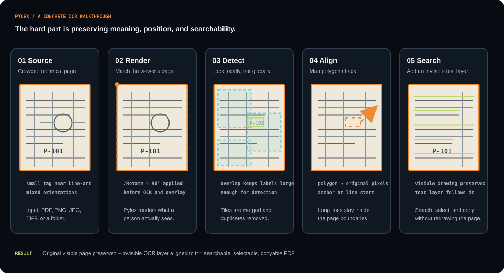
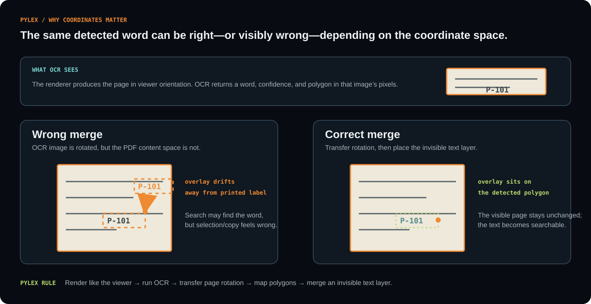

Pylex means PYthon LEXicon / language extraction. It is designed for documents where “run OCR” is not enough: the text must be placed back in the correct location, searchable output must remain visually faithful, and a batch workflow must make its slowest stages visible.
Separate recognition from presentation. Preserve the source page as the visual truth, then add an invisible text layer whose coordinates follow the same orientation and geometry as the rendered document.
Overview
Pylex accepts PDFs, raster images, folders, or multiple files from the command line. It can produce searchable PDFs, process selected page ranges, recurse through directory trees, preview work with a dry run, skip existing outputs, and overwrite files explicitly when requested.
The package also exposes a reusable library API. Callers can create and reuse an OCR engine, receive recognized regions with confidence and polygons in original image coordinates, and connect page, stage, tile, and completion callbacks to their own progress interface.

# Batch OCR with mirrored output structure pylex scans/ -r -o out/ -j 4 # Searchable PDF from an image pylex page.png -o page.searchable.pdf # Reuse the engine from Python from pylex import Config, create_engine, extract_text config = Config(inference_engine="auto", model_size="small") engine = create_engine(config) regions = extract_text("page.png", config=config, engine=engine)
OCR pipeline
The central problem is coordinate correctness. A naive render–OCR–overlay pipeline can detect text in the viewer’s rotated orientation but merge it into a PDF content stream that still uses the original orientation. Pylex renders each page as a viewer would see it, transfers the page rotation into the content stream before overlaying, and anchors each OCR line at the start of its detected polygon rather than its centre.
For large or crowded documents, the default path can split a page into overlapping tiles at local resolution. The detections are mapped back into page coordinates and de-duplicated, which helps protect small labels that disappear when an entire drawing is resized into one detector pass. A targeted 90-degree retry is applied to suitable tall detections so vertical engineering labels can be recovered without rotating every tile.

Batch design
Pylex uses process-based parallelism across independent files. Each worker owns and reuses its own PaddleOCR engine, avoiding unsafe concurrent calls against a single engine and avoiding repeated model construction for every file. Pages within one PDF remain sequential, so -j is a batch-throughput control rather than a way to accelerate one document.
The command-line progress display distinguishes model initialization, page rendering, tile inference, and output creation. That matters for OCR workloads because the first run can spend substantial time downloading, compiling, or warming an inference backend before the first result appears.
Engineering notes
Technical drawings expose mixed horizontal and vertical text, small labels inside symbols, line-art touching characters, uneven text scale, and tile-boundary effects. Tiling and orientation handling are practical mitigations, but they do not replace validation against representative documents.
The project’s local benchmark on an equivalent 1845 × 832 image measured approximately 10.29 seconds for dynamic Paddle OCR, 0.81–0.95 seconds for standard ONNX Runtime, and 1.06 seconds for OpenVINO. These are directional sandbox measurements, not universal guarantees; the target CPU, model cache, Paddle versions, and document density should determine the final choice.
PaddleOCR’s orientation classifier distinguishes 0° and 180° text lines rather than acting as a general 90° vertical-text classifier. Pylex therefore uses a focused rotated retry for likely vertical candidates instead of applying an expensive rotation pass everywhere.
Technical snapshot
| Area | Implementation |
|---|---|
| CLI | Batch-capable Python command with page ranges, recursive discovery, dry runs, exclusions, overwrite controls, and configurable output paths. |
| OCR engine | PaddleOCR with PP-OCRv6 small by default and a medium tier for higher-accuracy workloads. |
| Runtime | Automatic selection of OpenVINO when available, then standard ONNX Runtime, with dynamic Paddle fallback; explicit runtime flags remain available for benchmarking. |
| Document output | Searchable PDF generation using the original page plus an invisible OCR text overlay aligned to page geometry. |
| Scale strategy | Overlapping local-resolution tiles, detection reconciliation, targeted vertical-text retry, and process-based file parallelism. |
| Packaging | Python ≥ 3.10, MIT license, installable package with optional OCR, ONNX, OpenVINO, and development extras. |
Source and next steps
Pylex is publicly available as a focused open-source package. Its strongest next step is not adding more flags; it is building a representative validation set across rotated pages, crowded drawings, low-resolution scans, and ordinary office documents, then publishing accuracy and end-to-end runtime results by workload.